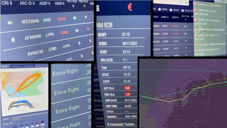

MUAC – Pre‑flight efficiency optimisation
The Pre‑Flight Check (PFC) initiative, launched by the Maastricht Upper Area Control Centre (MUAC) in 2020, aims to enhance flight efficiency during the pre‑flight phase by filing a trajectory closer to the expected actual flight path.
Details Strategic / Management